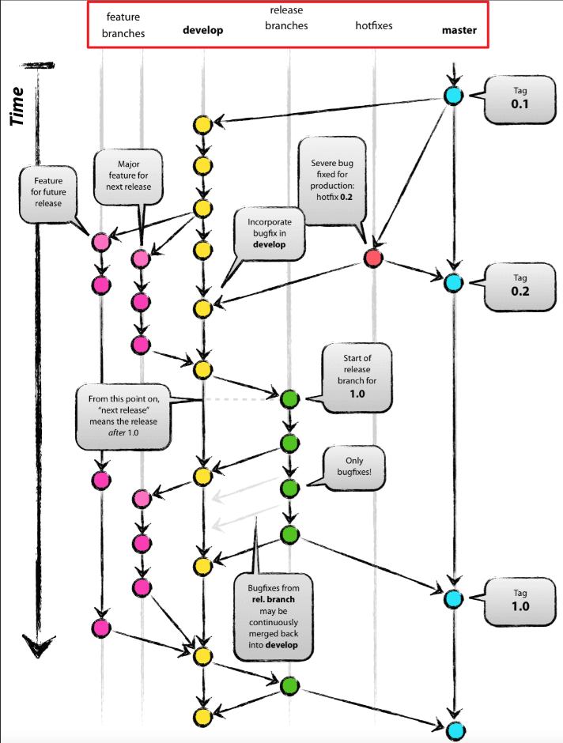

Github Flow 기반 협업과 라벨 분류
프로젝트 배경
여러 명이 하나의 저장소에서 동시에 작업하는 프로젝트에서는 기능을 어떻게 나누고, 어떤 기준으로 병합하며, 변경사항을 어떻게 추적할지에 대한 협업 규칙이 필요합니다.
처음에는 단순히 브랜치만 나누면 된다고 생각했지만, 기능이 늘어나고 이슈와 PR이 많아질수록 작업의 성격을 빠르게 구분하고 리뷰 흐름을 정리하는 기준이 꼭 필요하다는 것을 느꼈습니다.
특히 프로젝트를 진행하면서 다음과 같은 문제가 자주 발생했습니다.
- 이슈와 PR이 많아질수록 어떤 작업인지 한눈에 파악하기 어려움
- 기능 추가인지, 버그 수정인지, 문서 수정인지 흐름이 섞이기 쉬움
- 협업 중 우선순위가 높은 작업을 빠르게 식별하기 어려움
이 문제를 줄이기 위해 브랜치 전략으로는 Github Flow를 기반으로 하고, 추가로 라벨 체계를 함께 정리하여 작업을 분류했습니다.
Git 브랜치 전략이란
브랜치 전략은 여러 개발자가 하나의 저장소를 효율적으로 활용하기 위한 workflow입니다. 각자 작업을 안전하게 분리하고, 다시 통합하는 과정을 규칙화함으로써 협업을 더 유연하고 안정적으로 만들 수 있습니다.
대표적으로 많이 알려진 방식은 Git Flow와 Github Flow입니다.
Git Flow와 Github Flow
Git Flow는 역할이 나뉜 여러 브랜치를 기반으로 동작하는 전통적인 방식입니다.
feature → develop → release → hotfix → master
각 브랜치는 목적이 명확합니다.
- master : 실제 배포 가능한 안정 버전 관리
- develop : 다음 배포를 준비하는 통합 개발 브랜치
- feature : 기능 단위 작업 브랜치
- release : 배포 전 점검 및 QA를 위한 브랜치
- hotfix : 운영 중 긴급 수정 브랜치
구조가 체계적이라는 장점이 있지만, 웹 프로젝트처럼 빠른 수정과 잦은 배포가 필요한 환경에서는 다소 복잡하게 느껴질 수 있습니다.
반면 Github Flow는 훨씬 단순합니다. 핵심은 항상 배포 가능한 기준 브랜치를 유지하고, 모든 작업은 별도 브랜치에서 진행한 뒤 Pull Request를 통해 병합하는 것입니다.
왜 Github Flow를 선택했는가
프로젝트에서는 기능 구현, 수정, UI 개선, 문서 정리 등 다양한 작업이 동시에 발생했습니다. 이때 release, hotfix 같은 브랜치를 세분화하기보다 작업을 짧은 단위로 나누고 PR 중심으로 리뷰하는 흐름이 더 적합하다고 판단했습니다.
그래서 Github Flow를 기반으로 협업하되, 실제 운영에서는 dev 브랜치를 통합 브랜치로 두고 각 작업 브랜치를 dev에서 분기해 관리했습니다.
dev → feat/login dev → fix/signup-error dev → docs/readme-update
즉, 흐름 자체는 Github Flow의 철학을 따르되, 팀의 통합 테스트와 작업 정리를 위해 dev를 한 단계 두는 방식으로 운영했습니다.
Github Flow의 핵심 원칙
- 기준 브랜치는 항상 안정적인 상태를 유지한다
- 새 작업은 항상 별도 브랜치에서 시작한다
- 브랜치 이름은 작업 내용을 구체적으로 드러낸다
- 작업은 작은 단위로 커밋한다
- 반드시 Pull Request를 통해 리뷰 후 병합한다
- 병합 이후에는 배포 또는 통합 검증 흐름으로 자연스럽게 이어진다
실제 프로젝트에서의 작업 흐름
프로젝트에서는 다음과 같은 흐름으로 작업을 관리했습니다.
- 이슈 생성
- 라벨 지정
- 작업 브랜치 생성
- 기능 단위 커밋
- Pull Request 생성
- 리뷰 및 수정
- dev 브랜치에 병합
git checkout -b feat/login dev git add . git commit -m "Add login and signin UI" git push origin feat/login
이 방식은 작업 내용을 브랜치, 커밋, PR 단위로 명확히 남길 수 있어서 리뷰와 추적이 훨씬 수월했습니다.
라벨 전략을 함께 사용한 이유
브랜치 전략만으로는 이슈와 PR의 성격을 한눈에 구분하기 어려웠습니다. 특히 프로젝트가 커질수록 “이 작업이 기능 구현인지, 설정 변경인지, 문서 수정인지” 빠르게 식별하는 기준이 필요했습니다.
그래서 Github Flow 기반 협업 위에 라벨 시스템을 함께 두고 작업을 분류했습니다.
프로젝트에서는 예시처럼 총 11개의 라벨로 작업을 구분해 관리했습니다. 이렇게 분류해두면 이슈 생성 단계부터 작업의 성격이 드러나고, PR 목록만 보더라도 어떤 종류의 변경이 많은지 쉽게 파악할 수 있습니다.
11개의 라벨로 작업 분류하기
- api : 서버 - 클라이언트 통신 관련 작업
- chore : 자잘한 수정, 유지보수성 작업
- docs : 문서 파일 생성 / 수정 / 삭제
- feat : 기능 구현 및 생성
- fix : 버그 및 에러 수정
- help wanted : 추가 논의나 도움이 필요한 작업
- initial : 첫 이슈 / 첫 PR
- question : 기타 질문사항 정리
- refactor : 구조 개선, 코드 정리, 리팩토링
- setting : 라이브러리, 환경 변수, 설정 관련 작업
- style : UI 스타일 및 디자인 적용
예를 들어 로그인 기능 구현은 feat, API 연결은 api, 레이아웃 조정은 style, 기존 구조 개선은 refactor처럼 라벨을 나눠 사용했습니다.
이렇게 작업을 라벨 기준으로 나누면 단순히 "무엇을 했다"를 넘어서 프로젝트에서 어떤 종류의 일이 얼마나 발생하고 있는지까지 파악할 수 있다는 장점이 있습니다.
라벨 전략의 장점
- 이슈와 PR의 성격을 빠르게 구분할 수 있음
- 리뷰어가 작업 맥락을 더 쉽게 파악할 수 있음
- 기능 작업과 유지보수 작업을 구분해 관리할 수 있음
- 프로젝트의 작업 분포를 한눈에 볼 수 있음
- 협업 규칙이 명확해져 커뮤니케이션 비용이 줄어듦
정리
Github Flow는 복잡한 브랜치 구조보다 짧은 작업 단위, 명확한 PR, 빠른 리뷰와 병합에 강점을 가진 협업 방식입니다.
프로젝트에서는 이 흐름을 기반으로 dev 브랜치를 통합 브랜치로 활용했고, 여기에 11개의 라벨 체계를 추가해 작업 종류를 세분화했습니다.
- Github Flow 기반의 단순한 브랜치 운영
- dev 브랜치를 활용한 통합 관리
- 11개 라벨로 이슈 / PR 성격 분류
- 리뷰와 협업 맥락을 더 명확하게 정리
결국 중요한 것은 특정 전략 자체보다, 팀이 같은 규칙을 이해하고 일관되게 사용하는 것입니다. 브랜치 전략과 라벨 체계를 함께 정리해두면 협업의 흐름이 훨씬 명확해지고, 프로젝트를 안정적으로 운영할 수 있습니다.